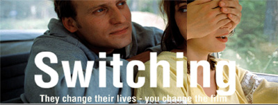

Day: Wednesday
Time: 7PM – Director’s CUT / 9PM – Audience Cut
Location: Camera 12
Ticket Price: Full Price $15.00/ Discounted Price for ISEA registration $12.00
Performance Duration:
Tickets here!
 SWITCHING by Morten Schjodt ZeroOne San Jose Festival and the Canadian Film Centre’s Habitat New Media Lab presents the US premiere of the award-winning Danish interactive film Switching. Please join us as director Morten Schjødt presents his interactive film and shares with us his creative and production process. Switching, winner of the Prix Möbius Nordica 2005 in France, and the Cyberloup Prize at the Festival International du Nouveau Cinema and Nouveau Medias 2003 in Montreal, is a love story that allows you to slip into a storytelling labyrinth where you simultaneously unfold and disrupt the narrative. Released on DVD in April 2003, Switching is one of the first commercial successes that radically inserts interactivity into storytelling and narrative technique. From Switching booklet, Oncotype 2003 “Frida and Simon lives together, but something has changed. They can't really communicate any more. One night, Frida turns on the light in their bedroom to try and understand what is wrong. Frida starts the difficult process of creating a new story around herself and Simon. A process in which we often feel that ourselves and others are adversaries. As a user of the film, you are drawn into this game. The process - the creation of a story - is therefore an important part of the experience. The interactive form is used to create a fragmented narrative structure that resembles the chaotic narrative form our dreams. The user of this film enters a narrative labyrinth simultaneously unfolding and disrupting the story. It is more a state of mind - a symbol of consciousness as a multidimensional, never-ending thought process.” Wednesday - Friday, 7:00 pm - 9:00 pm, Camera 12 SWITCHING
by Morten Schjodt JUNKYARD OF DREAMS
an improvised film-performance with a live band and live narration.
by Michael Lew From Janet Murray's Holodeck to Lev Manovich's Database Cinema, the interactive narrative form represents the "holy grail" of the interactive medium. For some, the pleasure derived from interactive stories is found in the theorizing of them. For others such pleasure has yet to be found in mainstream practice. Indeed, today, most traditional entertainment companies are focussed on the distribution possibilities of the interactive medium alone, paying close attention to the creation of short-form, linear, non-interactive stories for web and mobile delivery. Neither the experiments in research labs, nor the "movies on mobile" really explain what we can expect from this potential form of interactive entertainment -- the mainstream interactive narrative experience. What is it? Is it even possible? Are there any good examples of it? Co-presented by Habitat New Media Lab at the Canadian Film Centre and curated by its director, Ana Serrano, ISEA presents The Performative Cinema Programme. This three day line up will bring together creators from around the world who are at the forefront of this emerging form. From master filmmaker Peter Greenaway to emerging talent such as Morten Schjodt and Michael Lew, the Performative Programme at ISEA will display various ways in which cinematic narratives are constructed within the interactive medium. With the director as the main interactor or performer, audiences will experience cinema in an entirely new way. HABITAT NEW MEDIA LAB at the Canadian Film Centre Established by acclaimed filmmaker Norman Jewison, the Canadian Film Centre created Habitat New Media Lab in 1997 as a collaborative, production-based learning, and research environment where diverse teams push the evolution of art and entertainment. Based on a cycle of training, production and research, Habitat is an internationally acclaimed facility that has produced award-winning new media prototypes ranging from simulation-based interactive documentaries, to wireless storytelling networks, to interactive short films and narrative-driven media installations. |